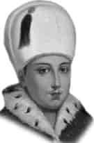

II. OSMAN (GENÇ)
Babası : I. Ahmet
Annesi : Mahfiruz Haseki Sultan
Doğumu : 3 Kasım 1604
Vefatı : 10 Mayıs 1622
Saltanatı : 1617 - 1622 (5 yıl)
Genç Osman İstanbul’da dünyaya geldi. Annesi onun yetişmesi için çok titiz davrandı. İyi bir terbiye ve tahsil yaptırdı. Genç Osman zeki ve enerjik bir padişahtı. Bıyıkları henüz terlememiş olan II. Osman sima itibarı ile çok güzeldi.
26 Şubat 1618’de, amcası I. Mustafa akli yetersizliği sebebiyle ve ulemanın fetvası üzerine tahttan indirilince padişah oldu. Çocuk yaşta olmasına rağmen mükemmel ve muazzam planları vardı. Büyük Lehistan Seferi’ne bizzat katılarak başkomutanlık yaptı. Atılgan, cesur ve gözü pek olan bu padişah yaşasaydı ikinci bir fatih olurdu diyenler vardır. Aynı zamanda hattat ve şairdi. Bir beyti de şudur:
Niyetim hizmet idi saltanat ve devletime,
Çalışır hasıd ü bedhah aceb nekbetime.
Çok büyük emeller ve planlar üzerinde duran genç padişaha hasetçilerin hasedi kabardı. Kendisine planlarını tatbik etmesinde yardım edecek bir vezir veya bir sadrazam bulamadı. Tarihte eşine az rastlanır bir fecaatle tahttan indirilerek Yedikule Zindanları’nda boğdurularak şehit edildi. Aynı yıl içinde İstanbul Boğazı donmuş, İstanbul’dan Üsküdar’a yaya olarak geçilmişti. Yine aynı yıl güneş tutulması gerçekleşmiştir. Babası I. Ahmet’in, Sultan Ahmet Camii yanındaki türbesine defnedildi.
Şair Nevi, onun vefatı üzerine şunları yazdı:
Bir şah-ı âlişan iken, şah-ı cihana kıydılar.
Gayretli, genç aslan iken, şah-ı cihanda kıydılar.
Gazai bahadır Han idi, âli nesli sultan idi.
Namıyla Osman Han idi, şah-ı cihana kıydılar.
Erkek çocukları: Ömer, Mustafa.
Kız çocuğu: Zeynep.